7. Hydrology¶
The model parameterizes interception, throughfall, canopy drip, snow accumulation and melt, water transfer between snow layers, infiltration, evaporation, surface runoff, sub-surface drainage, redistribution within the soil column, and groundwater discharge and recharge to simulate changes in canopy water 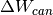 , surface water 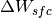 , snow water , soil water 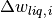 , and soil ice 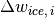 , and water in the unconfined aquifer 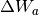 (all in kg m-2 or mm of H2O) (Figure 7.1).
The total water balance of the system is
(1)¶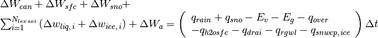
where 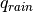 is the liquid part of precipitation, is the solid part of precipitation, 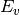 is ET from vegetation (Chapter 5), 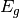 is ground evaporation (Chapter 5), 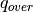 is surface runoff (section 7.3), 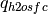 is runoff from surface water storage (section 7.3), 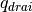 is sub-surface drainage (section 7.6), 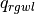 and 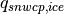 are liquid and solid runoff from glaciers, wetlands, and lakes, and runoff from other surface types due to snow capping (section 7.7) (all in kg m-2 s-1), 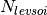 is the number of soil layers (note that hydrology calculations are only done over soil layers 1 to ; ground levels 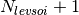to 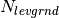 are currently hydrologically inactive; Lawrence et al. 2008) and is the time step (s).
Figure 7.1. Hydrologic processes represented in CLM.
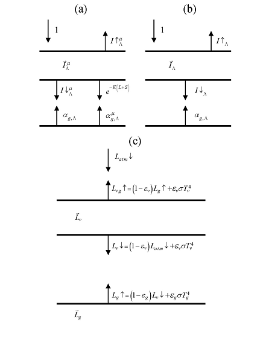7.1. Canopy Water¶
Precipitation is either intercepted by the canopy, falls directly to the snow/soil surface (throughfall), or drips off the vegetation (canopy drip). Interception by vegetation 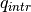 (kg m-2 s-1) does not distinguish between liquid and solid phases
(2)¶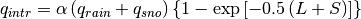
where  and
and  are the exposed leaf and stem area index,
respectively (section 2.1.4), and 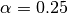 scales
interception from point to grid cell (Lawrence et al. 2007). Throughfall
(kg m-2 s-1), however, is divided into
liquid and solid phases reaching the ground (soil or snow surface) as
are the exposed leaf and stem area index,
respectively (section 2.1.4), and 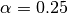 scales
interception from point to grid cell (Lawrence et al. 2007). Throughfall
(kg m-2 s-1), however, is divided into
liquid and solid phases reaching the ground (soil or snow surface) as
(3)¶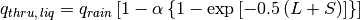
(4)¶![q_{thru,\, ice} =q_{sno} \left[1-\alpha \left\{1-\exp \left[-0.5\left(L+S\right)\right]\right\}\right].](../../_images/math/cbb17ba5b504ccd249d2e917425555281ad0d0cf.png)
Similarly, the canopy drip is
(5)¶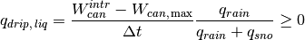
(6)¶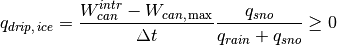
where
(7)¶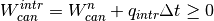
is the canopy water after accounting for interception, 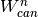 is the canopy water from the previous time step, and 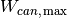 (kg m-2) is the maximum amount of water the canopy can hold
(8)¶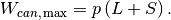
The maximum storage of solid water is assumed to be the same as that of liquid water, 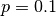 kg m-2 (Dickinson et al. 1993). The canopy water is updated as
(9)¶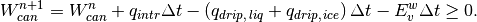
where 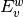 is the flux of water vapor from stem and leaf surfaces (Chapter 5). The total rate of liquid and solid precipitation reaching the ground is then
(10)¶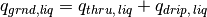
(11)¶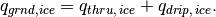
Solid precipitation reaching the soil or snow surface, 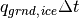, is added immediately to the snow pack (section 7.2). The liquid part, 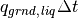 is added after surface fluxes (Chapter 5) and snow/soil temperatures (Chapter 6) have been determined.
The wetted fraction of the canopy (stems plus leaves), which is required for the surface albedo (section 3.1) and surface flux (Chapter 5) calculations is (Dickinson et al. 1993)
(12)¶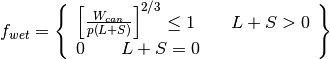
while the fraction of the canopy that is dry and transpiring is
(13)¶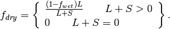
7.2. Surface Runoff, Surface Water Storage, and Infiltration¶
The moisture input at the grid cell surface ,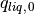 , is the sum of liquid precipitation reaching the ground and melt water from snow (kg m-2 s-1). The moisture flux is then partitioned between surface runoff, surface water storage, and infiltration into the soil.
7.2.1. Surface Runoff¶
The simple TOPMODEL-based (Beven and Kirkby 1979) runoff model (SIMTOP) described by Niu et al. (2005) is implemented to parameterize runoff. A key concept underlying this approach is that of fractional saturated area 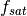 , which is determined by the topographic characteristics and soil moisture state of a grid cell. The saturated portion of a grid cell contributes to surface runoff, , by the saturation excess mechanism (Dunne runoff)
(14)¶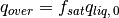
The fractional saturated area is a function of soil moisture
(15)¶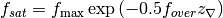
where 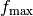 is the potential or maximum value of , 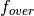 is a decay factor (m-1), and 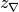 is the water table depth (m) (section 7.6). The maximum saturated fraction, , is defined as the value of the discrete cumulative distribution function (CDF) of the topographic index when the grid cell mean water table depth is zero. Thus, is the percent of pixels in a grid cell whose topographic index is larger than or equal to the grid cell mean topographic index. It should be calculated explicitly from the CDF at each grid cell at the resolution that the model is run. However, because this is a computationally intensive task for global applications, is calculated once at 0.125o resolution using the 1-km compound topographic indices (CTIs) based on the HYDRO1K dataset (Verdin and Greenlee 1996) from USGS following the algorithm in Niu et al. (2005) and then area-averaged to the desired model resolution (section 2.2.3). Pixels with CTIs exceeding the 95 percentile threshold in each 0.125o grid cell are excluded from the calculation to eliminate biased estimation of statistics due to large CTI values at pixels on stream networks. For grid cells over regions without CTIs such as Australia, the global mean is used to fill the gaps. See Li et al. (2013b) for additional details. The decay factor for global simulations was determined through sensitivity analysis and comparison with observed runoff to be 0.5 m-1.
7.2.2. Surface Water Storage¶
A surface water store has been added to the model to represent wetlands
and small, sub-grid scale water bodies. As a result, the wetland land
unit has been removed. The state variables for surface water are the
mass of water 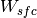 (kg m-2) and temperature
 (Chapter 6). Surface water storage and outflow are
functions of fine spatial scale elevation variations called
microtopography. The microtopography is assumed to be distributed
normally around the grid cell mean elevation. Given the standard
deviation of the microtopographic distribution, 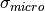
(m), the fractional area of the grid cell that is inundated can be
calculated. Surface water storage, 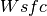, is related to the
height (relative to the grid cell mean elevation) of the surface water,
(Chapter 6). Surface water storage and outflow are
functions of fine spatial scale elevation variations called
microtopography. The microtopography is assumed to be distributed
normally around the grid cell mean elevation. Given the standard
deviation of the microtopographic distribution, 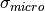
(m), the fractional area of the grid cell that is inundated can be
calculated. Surface water storage, 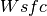, is related to the
height (relative to the grid cell mean elevation) of the surface water,
 , by
, by
(16)¶
where is the error function. For a given value of
, equation can be solved for using the
Newton-Raphson method. Once is known, one can determine the
fraction of the area that is inundated as
(17)¶
No global datasets exist for microtopography, so the default parameterization is a simple function of slope
(18)¶
where  is the topographic slope,
determines
the maximum value of
is the topographic slope,
determines
the maximum value of  , and
, and  is an
adjustable parameter. Default values in the model are
and .
is an
adjustable parameter. Default values in the model are
and .
If the spatial scale of the microtopography is small relative to that of the grid cell, one can assume that the inundated areas are distributed randomly within the grid cell. With this assumption, a result from percolation theory can be used to quantify the fraction of the inundated portion of the grid cell that is interconnected
(19)¶
where is a threshold below which no single connected
inundated area spans the grid cell and  is a scaling
exponent. Default values of and are 0.4 and
0.14, respectively. When the inundated fraction of the grid cell
surpasses , the surface water store acts as a linear
reservoir
is a scaling
exponent. Default values of and are 0.4 and
0.14, respectively. When the inundated fraction of the grid cell
surpasses , the surface water store acts as a linear
reservoir
(20)¶
where is the surface water runoff,
is a constant, is the amount of surface water present when
, and is the model time step.
The linear storage coefficent
is a function of grid cell mean topographic slope where
is the slope in radians.
7.2.3. Infiltration¶
The surface moisture flux remaining after surface runoff has been removed,
(21)¶
is divided into inputs to surface water ( ) and the soil . If exceeds the maximum soil infiltration capacity (kg m-2 s-1),
(22)¶
where is an ice impedance factor (section 7.4), infiltration excess (Hortonian) runoff is generated
(23)¶
and transferred from to . After evaporative losses have been removed, these moisture fluxes are
(24)¶
and
(25)¶
The balance of surface water is then calculated as
(26)¶
Bottom drainage from the surface water store
(27)¶
is then added to giving the total infiltration into the surface soil layer
(28)¶
Infiltration and explicit surface runoff are not allowed for glaciers.
7.3. Soil Water¶
Soil water is predicted from a multi-layer model, in which the vertical soil moisture transport is governed by infiltration, surface and sub-surface runoff, gradient diffusion, gravity, canopy transpiration through root extraction, and interactions with groundwater (Figure 7.1). The following derivation generally follows that of Z.-L. Yang (1998, unpublished manuscript) with modifications by Zeng and Decker (2009).
For one-dimensional vertical water flow in soils, the conservation of mass is stated as
(29)¶
where  is the volumetric soil water content
(mm:sup:3 of water mm-3 of soil), is
time (s),
is the volumetric soil water content
(mm:sup:3 of water mm-3 of soil), is
time (s),  is height above some datum in the soil column (mm)
(positive upwards),
is height above some datum in the soil column (mm)
(positive upwards),  is soil water flux (kg m-2
s-1 or mm s-1) (positive upwards), and
is soil water flux (kg m-2
s-1 or mm s-1) (positive upwards), and
 is a soil moisture sink term (mm of water mm-1
of soil s-1) (ET loss). This equation is solved
numerically by dividing the soil column into multiple layers in the
vertical and integrating downward over each layer with an upper boundary
condition of the infiltration flux into the top soil layer
and a lower boundary condition that depends on the
depth of the water table.
is a soil moisture sink term (mm of water mm-1
of soil s-1) (ET loss). This equation is solved
numerically by dividing the soil column into multiple layers in the
vertical and integrating downward over each layer with an upper boundary
condition of the infiltration flux into the top soil layer
and a lower boundary condition that depends on the
depth of the water table.
The soil water flux in equation can be described by Darcy’s
law
(30)¶
where  is the hydraulic conductivity (mm s-1),
and is the hydraulic potential (mm). The hydraulic
potential is
is the hydraulic conductivity (mm s-1),
and is the hydraulic potential (mm). The hydraulic
potential is
(31)¶
where is the soil matric potential (mm) (which is related to the adsorptive and capillary forces within the soil matrix), and is the gravitational potential (mm) (the vertical distance from an arbitrary reference elevation to a point in the soil). If the reference elevation is the soil surface, then . Letting , Darcy’s law becomes
(32)¶
Darcy’s equation can be further manipulated to yield
(33)¶
Substitution of this equation into equation , with , yields the Richards equation
(34)¶
Zeng and Decker (2009) note that this -based form of the
Richards equation cannot maintain the hydrostatic equilibrium soil
moisture distribution because of the truncation errors of the
finite-difference numerical scheme. They show that this deficiency can
be overcome by subtracting the equilibrium state from equation as
(35)¶
where  is a constant hydraulic potential above the water table
is a constant hydraulic potential above the water table
(36)¶
so that
(37)¶
where is the equilibrium soil matric potential (mm). Substitution of equations and into equation yields Zeng and Decker’s (2009) modified Richards equation
(38)¶
where the soil moisture sink term is now included.
7.3.1. Hydraulic Properties¶
The hydraulic conductivity (mm s-1) and
the soil matric potential (mm) for layer  vary with volumetric soil water and soil texture.
As with the soil thermal properties (section 6.3) the hydraulic
properties of the soil are assumed to be a weighted combination of the
mineral properties, which are determined according to sand and clay
contents based on work by Clapp and Hornberger (1978) and Cosby et al.
(1984), and organic properties of the soil (Lawrence and Slater 2008).
vary with volumetric soil water and soil texture.
As with the soil thermal properties (section 6.3) the hydraulic
properties of the soil are assumed to be a weighted combination of the
mineral properties, which are determined according to sand and clay
contents based on work by Clapp and Hornberger (1978) and Cosby et al.
(1984), and organic properties of the soil (Lawrence and Slater 2008).
The hydraulic conductivity is defined at the depth of the interface of two adjacent layers (Figure 7.3) and is a function of the saturated hydraulic conductivity , the liquid volumetric soil moisture of the two layers and and an ice impedance factor
(39)¶
The ice impedance factor is a function of ice content, and is meant to quantify the increased tortuosity of the water flow when part of the pore space is filled with ice. Swenson et al. (2012) used a power law form where and is the ice-filled fraction of the pore space.
Because the hydraulic properties of mineral and organic soil may differ significantly, the bulk hydraulic properties of each soil layer are computed as weighted averages of the properties of the mineral and organic components. The water content at saturation (i.e. porosity) is
(40)¶
where is the soil organic matter fraction, (Farouki 1981; Letts et al. 2000) is the porosity of organic matter and the porosity of the mineral soil is
(41)¶
The exponent “” is
(42)¶
where (Letts et al. 2000) and
(43)¶
The soil matric potential (mm) is defined at the node depth
 of each layer (Figure 7.3)
of each layer (Figure 7.3)
(44)¶
where the saturated soil matric potential (mm) is
(45)¶
where mm (Letts et al. 2000) is the saturated organic matter matric potential and the saturated mineral soil matric potential is
(46)¶
The saturated hydraulic conductivity,
(mm s-1), for
organic soils ( ) may be two to three orders of
magnitude larger than that of mineral soils ( ).
Bulk soil layer values of calculated as weighted
averages based on may therefore be determined primarily
by the organic soil properties even for values of as low
as 1 %. To better represent the influence of organic soil material on
the grid cell average saturated hydraulic conductivity, the soil organic
matter fraction is further subdivided into “connected” and “unconnected”
fractions using a result from percolation theory (Stauffer and Aharony
1994, Berkowitz and Balberg 1992). Assuming that the organic and mineral
fractions are randomly distributed throughout a soil layer, percolation
theory predicts that above a threshold value
, connected flow pathways consisting of
organic material only exist and span the soil space. Flow through these
pathways interacts only with organic material, and thus can be described
by . This fraction of the grid cell is given by
).
Bulk soil layer values of calculated as weighted
averages based on may therefore be determined primarily
by the organic soil properties even for values of as low
as 1 %. To better represent the influence of organic soil material on
the grid cell average saturated hydraulic conductivity, the soil organic
matter fraction is further subdivided into “connected” and “unconnected”
fractions using a result from percolation theory (Stauffer and Aharony
1994, Berkowitz and Balberg 1992). Assuming that the organic and mineral
fractions are randomly distributed throughout a soil layer, percolation
theory predicts that above a threshold value
, connected flow pathways consisting of
organic material only exist and span the soil space. Flow through these
pathways interacts only with organic material, and thus can be described
by . This fraction of the grid cell is given by
(47)¶
where , , and . In the unconnected portion of the grid cell, , the saturated hydraulic conductivity is assumed to correspond to flow pathways that pass through the mineral and organic components in series
(48)¶
where saturated hydraulic conductivity for mineral soil depends on soil texture (Cosby et al. 1984) as
(49)¶
The bulk soil layer saturated hydraulic conductivity is then computed as
(50)¶
7.3.2. Numerical Solution¶
With reference to Figure 7.3, the equation for conservation of mass (equation ) can be integrated over each layer as
(51)¶
Note that the integration limits are negative since is defined
as positive upward from the soil surface. This equation can be written
as
(52)¶
where is the flux of water across interface , is the flux of water across interface , and is a layer-averaged soil moisture sink term (ET loss) defined as positive for flow out of the layer (mm s-1). Taking the finite difference with time and evaluating the fluxes implicitly at time yields
(53)¶
where
is the change in volumetric soil liquid water of layer in time
and is the thickness of layer
(mm).
The water removed by transpiration in each layer is a function of the total transpiration (Chapter 5) and the effective root fraction
(54)¶
Figure 7.3. Schematic diagram of numerical scheme used to solve for soil water fluxes.
Shown are three soil layers, , , and .
The soil matric potential  and volumetric soil water
are defined at the layer node depth .
The hydraulic conductivity is defined at
the interface of two layers . The layer thickness is
. The soil water fluxes and
are defined as positive upwards. The soil moisture sink
term
and volumetric soil water
are defined at the layer node depth .
The hydraulic conductivity is defined at
the interface of two layers . The layer thickness is
. The soil water fluxes and
are defined as positive upwards. The soil moisture sink
term  (ET loss) is defined as positive for flow out of the
layer.
(ET loss) is defined as positive for flow out of the
layer.
Note that because more than one plant functional type (PFT) may share a soil column, the transpiration is a weighted sum of transpiration from all PFTs whose weighting depends on PFT area as
(55)¶
where is the number of PFTs sharing a soil column, is the transpiration from the PFT on the column, and is the relative area of the PFT with respect to the column. The effective root fraction is also a column-level quantity that is a weighted sum over all PFTs. The weighting depends on the per unit area transpiration of each PFT and its relative area as
(56)¶
where is the effective root fraction for the PFT
(57)¶
and  is the fraction of roots in layer
(Chapter 8), is a soil
dryness or plant wilting factor for layer (Chapter 8), and
is a wetness factor for the total
soil column for the PFT (Chapter 8).
is the fraction of roots in layer
(Chapter 8), is a soil
dryness or plant wilting factor for layer (Chapter 8), and
is a wetness factor for the total
soil column for the PFT (Chapter 8).
The soil water fluxes in equation , which are a function of
 and because of
their dependence on hydraulic conductivity and soil matric potential,
can be linearized about using a Taylor series expansion
as
and because of
their dependence on hydraulic conductivity and soil matric potential,
can be linearized about using a Taylor series expansion
as
(58)¶
(59)¶
Substitution of these expressions for and
 into equation results in a general tridiagonal
equation set of the form
into equation results in a general tridiagonal
equation set of the form
(60)¶
where
(61)¶
(62)¶
(63)¶
(64)¶
The tridiagonal equation set is solved over where the layer is a virtual layer representing the aquifer.
The finite-difference forms of the fluxes and partial derivatives in equations - can be obtained from equation as
(65)¶
(66)¶
(67)¶
(68)¶
(69)¶
(70)¶
The derivatives of the soil matric potential at the node depth are derived from equation
(71)¶
(72)¶
(73)¶
with the constraint .
The derivatives of the hydraulic conductivity at the layer interface are derived from equation
(74)¶![\begin{array}{l} {\frac{\partial k\left[z_{h,\, i-1} \right]}{\partial \theta _{liq,\, i-1} } =\frac{\partial k\left[z_{h,\, i-1} \right]}{\partial \theta _{liq,\, i} } =\left(1-\frac{f_{frz,\, i-1} +f_{frz,\, i} }{2} \right)\left(2B_{i-1} +3\right)k_{sat} \left[z_{h,\, i-1} \right]\times } \\ {\qquad \left[\frac{0.5\left(\theta _{\, i-1} +\theta _{\, i} \right)}{0.5\left(\theta _{sat,\, i-1} +\theta _{sat,\, i} \right)} \right]^{2B_{i-1} +2} \left(\frac{0.5}{0.5\left(\theta _{sat,\, i-1} +\theta _{sat,\, i} \right)} \right)} \end{array}](../../_images/math/3ed3fdde823a6c88039357f7f41f1833926bfe01.png)
(75)¶![\begin{array}{l} {\frac{\partial k\left[z_{h,\, i} \right]}{\partial \theta _{liq,\, i} } =\frac{\partial k\left[z_{h,\, i} \right]}{\partial \theta _{liq,\, i+1} } =\left(1-\frac{f_{frz,\, i} +f_{frz,\, i+1} }{2} \right)\left(2B_{i} +3\right)k_{sat} \left[z_{h,\, i} \right]\times } \\ {\qquad \left[\frac{0.5\left(\theta _{\, i} +\theta _{\, i+1} \right)}{0.5\left(\theta _{sat,\, i} +\theta _{sat,\, i+1} \right)} \right]^{2B_{i} +2} \left(\frac{0.5}{0.5\left(\theta _{sat,\, i} +\theta _{sat,\, i+1} \right)} \right)} \end{array}.](../../_images/math/9c511bc8e0767099469379debad45095d8fbadc9.png)
7.3.2.1. Equilibrium soil matric potential and volumetric moisture¶
The equilibrium soil matric potential can be derived from equation as
(76)¶
and the equilibrium volumetric water content
at depth can also be
derived as
(77)¶
Here, the soil matric potentials, the water table depth and the soil depths have units of mm. For the finite-difference scheme, a layer-average equilibrium volumetric water content is used in equation and can be obtained from
(78)¶
which when integrated yields
(79)¶
Equation is valid when the water table is deeper
than both interface depths and
. Since the water table can be within the soil
column, the equation is modified if the water table is within soil layer
( ) as a weighted
average of the saturated part and the unsaturated part
(80)¶
where and the unsaturated part is
(81)¶
If , then . If the water table is below the soil column ( ), an equilibrium volumetric soil moisture is calculated for a virtual layer as
(82)¶
The equilibrium volumetric soil moisture is constrained by
(83)¶
The equilibrium soil matric potential is then
(84)¶
7.3.2.2. Equation set for layer ¶
For the top soil layer (), the boundary condition is the infiltration rate (section 7.3), , and the water balance equation is
(85)¶
After grouping like terms, the coefficients of the tridiagonal set of equations for are
(86)¶
(87)¶
(88)¶
(89)¶
7.3.2.3. Equation set for layers ¶
The coefficients of the tridiagonal set of equations for are
(90)¶
(91)¶
(92)¶
(93)¶
7.3.2.4. Equation set for layers ¶
For the lowest soil layer ( ), the bottom boundary condition depends on the depth of the water table. If the water table is within the soil column ( ), a zero-flux bottom boundary condition is applied () and the coefficients of the tridiagonal set of equations for are
(94)¶
(95)¶
(96)¶
(97)¶
The coefficients for the aquifer layer are then
(98)¶
(99)¶
(100)¶
(101)¶
If the water table is below the soil column ( ), the coefficients for are
(102)¶
(103)¶
(104)¶
(105)¶
The terms are evaluated using
(106)¶![\psi _{N_{levsoi} +1} =\psi _{sat,\, N_{levsoi} } \left[s_{N_{levsoi} +1} \right]^{-B_{N_{levsoi} } } \ge -1\times 10^{8}](../../_images/math/3e02d436aaeee865cc3476c153dc0889b8373b03.png)
(107)¶
where
(108)¶
is evaluated from equations and ,
and
(109)¶
The coefficients for the aquifer layer are then
(110)¶
(111)¶
(112)¶
(113)¶
Upon solution of the tridiagonal equation set (Press et al. 1992), the liquid water contents are updated as follows
(114)¶
The volumetric water content is
(115)¶
7.4. Frozen Soils and Perched Water Table¶
When soils freeze, the power-law form of the ice impedance factor (section 7.4.1) can greatly decrease the hydraulic conductivity of the soil, leading to nearly impermeable soil layers. When unfrozen soil layers are present above relatively ice-rich frozen layers, the possibility exists for perched saturated zones. Lateral drainage from perched saturated regions is parameterized as a function of the thickness of the saturated zone
(116)¶
where depends on topographic slope and soil hydraulic conductivity,
(117)¶
where is an ice impedance factor determined from
the ice content of the soil layers interacting with the water table
(section 7.6), is the mean grid cell topographic slope in
radians, is the depth to the frost table, and
is the depth to the perched saturated zone.
The frost table is defined as the shallowest frozen
layer having an unfrozen layer above it, while the perched water table
is defined as the depth at which the
volumetric water content drops below a specified threshold. The default
threshold is set to 0.9. Drainage from the perched saturated zone
is removed from layers
through , which are the layers containing
and, respectively.
7.5. Groundwater-Soil Water Interactions¶
Drainage or sub-surface runoff is based on the SIMTOP scheme (Niu et al. 2005) with a modification to account for reduced drainage in frozen soils. In the work of Niu et al. (2005), the drainage (kg m-2 s-1) was formulated as
(118)¶
Here, the water table depth has units of meters. To restrict drainage in frozen soils, Niu et al. (2005) added the following condition
(119)¶
In preliminary testing it was found that a more gradual restriction of drainage was required so that the water table depth remained dynamic under partially frozen conditions. The following modification is made to equation
(120)¶
where is an ice impedance factor determined from the ice content of the soil layers interacting with the water table
(121)¶
where is an adjustable parameter, is the
index of the layer directly above the water table,
is the
ice-filled fraction of the pore space of soil layer (kg
m-2), and is the layer thickness
(mm). This expression is functionally the same as that used to determine
the ice impedance factor in section 7.4. In equation , the decay factor
m-1 and the maximum drainage when
the water table depth is at the surface
kg m-2
s-1 , where is the mean grid cell
topographic slope in radians, were determined for global simulations
through sensitivity analysis and comparison with observed runoff.
Determination of water table depth is based on work by Niu et al. (2007). In this approach, a groundwater component is added in the form of an unconfined aquifer lying below the soil column (Figure 7.1). The groundwater solution is dependent on whether the water table is within or below the soil column. The water stored in the unconfined aquifer has a prescribed maximum value (5000 mm). When the water table is within the soil column, is constant because there is no water exchange between the soil column and the underlying aquifer. In this case, recharge to the water table is diagnosed by applying Darcy’s law across the water table
(122)¶
where is the matric potential at the water table and is the hydraulic conductivity of the layer containing the water table. Change in the water table is then calculated as the difference between recharge and drainage, scaled by the specific yield of the layer containing the water table
(123)¶
The specific yield, , which depends on the soil properties and the water table location, is derived by taking the difference between two equilibrium soil moisture profiles whose water tables differ by an infinitesimal amount
(124)¶
where B is the Clapp-Hornberger exponent. Because is a function of the soil properties, it results in water table dynamics that are consistent with the soil water fluxes described in section 7.4.
For the case when the water table is below the soil column, the change in water stored in the unconfined aquifer (mm) is updated as
(125)¶
and the water table is updated using equation with the specific yield of layer .
The recharge rate is defined as positive when water enters the aquifer
(126)¶
where is the change in liquid water content for layer calculated from the solution of the soil water equations (section 7.4), and (mm) is
(127)¶
After the above calculations, two numerical adjustments are implemented to keep the liquid water content of each soil layer ( ) within physical constraints of where (mm). First, beginning with the bottom soil layer , any excess liquid water in each soil layer () is successively added to the layer above. Any excess liquid water that remains after saturating the entire soil column (plus a maximum surface ponding depth kg m-2), is added to drainage . Second, to prevent negative , each layer is successively brought up to by taking the required amount of water from the layer below. If this results in , then the layers above are searched in succession for the required amount of water ( ) and removed from those layers subject to the constraint . If sufficient water is not found, then the water is removed from and .
The soil surface layer liquid water and ice contents are then updated
for dew , frost , or sublimation
 (section 5.4) as
(section 5.4) as
(128)¶
(129)¶
(130)¶
Sublimation of ice is limited to the amount of ice available.
7.6. Runoff from glaciers and snow-capped surfaces¶
All surfaces are constrained to have a snow water equivalent kg m-2. For snow-capped surfaces, the solid and liquid precipitation reaching the snow surface and dew in solid or liquid form, is separated into solid and liquid runoff terms
(131)¶
(132)¶
and snow pack properties are unchanged. The runoff is sent to the River Transport Model (RTM) (Chapter 11) where it is routed to the ocean as an ice stream and, if applicable, the ice is melted there.
For snow-capped surfaces other than glaciers and lakes the runoff is assigned to the glaciers and lakes runoff term (e.g. ). For glacier surfaces the runoff term is calculated from the residual of the water balance
(133)¶
where and are the water balances at the beginning and ending of the time step defined as
(134)¶
Currently, glaciers are non-vegetated and . The contribution of lake runoff to is described in section 9.6.3. The runoff term may be negative for glaciers and lakes, which reduces the total amount of runoff available to the RTM.
7.7. The Variable Infiltration Capacity parameterizations as a hydrologic option¶
The hydrologic parameterizations from the Variable Infiltration Capacity (VIC) land surface model (Liang et al. 1994) have been implemented as a hydrologic option. VIC includes two different time scales of runoff generation. To capture such dynamics, the soil column in the original VIC model (http://www.hydro.washington.edu/Lettenmaier/Models/VIC/Overview/ModelOverview.shtml) is typically divided into three layers with variable soil depths. The upper two layers are designed to represent the dynamic responses of the soil to rainfall events for surface runoff generation, and the lower layer is used to characterize the seasonal soil moisture behavior and subsurface runoff generation. The implementation of the VIC parameterizations are as described in Li et al. (2011) except where updated for consistency with modifications to CLM hydrology in CLM4.5. Note that unless explicitly mentioned in this section, any descriptions from sections 7.1-7.7 are intact and remain valid when the VIC hydrology option is turned on.
Three VIC soil layers are defined by aggregating multiple layers in the CLM soil column with thicknesses of , , , respectively. At each time step, the soil moisture profile is determined following the algorithms detailed in section 7.4, and aggregated to the three VIC layers for runoff generation calculations. The surface runoff generated by the saturation excess runoff mechanism, qover, is calculated using equation , but with the fractional saturated area defined as
(135)¶
where  and are calculated as
and
, respectively, and
represent the soil moisture (kg m-2) and maximum soil
moisture (kg m-2) in the top two VIC layers combined.
and are calculated as
and
, respectively, and
represent the soil moisture (kg m-2) and maximum soil
moisture (kg m-2) in the top two VIC layers combined.
In equation , it is hypothesized that the spatial heterogeneity of soil moisture holding capacity in the top VIC layers can be represented by a soil moisture holding capacity curve as defined in equation , in which is a parameter that controls the shape of the curve. That is, if one assumes that a grid cell (or soil column in this case) is composed of many pixels (or points) with varying soil moisture capacity, this variation across the grid cell can be represented conceptually as
(136)¶
where and are the point and maximum point soil
moisture holding capacities (kg m-2), respectively;
 is the fraction of a grid cell for which the soil moisture
holding capacity is less than or equal to ; and
. When is equal to
, the corresponding point soil moisture holding capacity
is denoted as . The maximum soil infiltration capacity (kg
m-2 s-1) in equation becomes
is the fraction of a grid cell for which the soil moisture
holding capacity is less than or equal to ; and
. When is equal to
, the corresponding point soil moisture holding capacity
is denoted as . The maximum soil infiltration capacity (kg
m-2 s-1) in equation becomes
(137)¶![q_{inf,\, max} =\left\{\begin{array}{l} {\left(1-f_{sat} \right)\theta _{ice,\, top} \left(\frac{w_{m,\, top} -w_{top} }{\Delta t} \right)\qquad i_{o} +q_{in,\, soil} \Delta t\ge i_{m} } \\ {\left(1-f_{sat} \right)\frac{\theta _{ice,\, top} }{\Delta t} \left\{\begin{array}{l} {\left(w_{m,\, top} -w_{top} \right)-w_{m,\, top} \times } \\ {\left[1-\max \left(1,\, \frac{\left(i_{o} +q_{in,\, soil} \Delta t\right)}{i_{m} } \right)^{1+b_{inf} } \right]} \end{array}\right\}\qquad i_{o} +q_{in,\, soil} \Delta t<i_{m} } \end{array}\right\}](../../_images/math/0701c38edc028345dc032d860b300ead64ad8943.png)
where is an ice impedance factor determined from the ice content of the top two VIC layers combined, similar to the one used in equation . Interested readers are referred to Wood et al. (1992) for a schematic representation of equation and derivations associated with equations , , and .
The subsurface runoff in equation is parameterized as
(138)¶
where and are the soil moisture (kg m-2) and maximum soil moisture (kg m-2) in the bottom VIC layer, respectively, is the maximum subsurface flow rate (kg m-2 s-1), is a fraction of , is a fraction of , and is an ice impedance factor determined from the ice content of the bottom VIC layer, similar to the ones in equations and .
As the VIC parameterizations are based on conceptual models, Huang and Liang (2006) recommended calibrating the VIC parameters, including , , , , and the second and third layer soil thicknesses using observations. In this implementation, the thicknesses of the VIC soil layers are fixed to maintain consistency with the soil water algorithms in section 7.4. The other four parameters, , , , and are prescribed and are included in the CLM surface dataset. Users can provide calibrated parameter values determined manually or automatically by modifying the surface dataset. Note that the units of on the surface dataset are mm d-1 (the traditional units for other standard VIC applications) which are then converted to kg m-2 s-1 for use in CLM. A preliminary calibration was performed by perturbing the three parameters , , and , and fixing globally. The parameter space for , , and was sampled using the global sensitivity analysis framework described by Hou et al. (2012) to produce 64 combinations of parameter values based on a priori information about the parameters. For each set of parameter values, a global simulation was performed using the compset I_2000 (i.e., driven by satellite phenology) at a resolution of 0.9ox1.25o on the basis of the development tag betr_m_sci10_clm45sci13_clm4_0_54. At each model grid cell, the set of , , and values corresponding to the simulation that produced the lowest absolute bias compared to the climatological mean annual total runoff from the Global Runoff Data Center (GRDC) was selected as the calibrated values. These values are provided only as a reference due to the preliminary nature of the calibration. Interested users of the VIC hydrology option are encouraged to calibrate the parameters for their applications for improved performance.